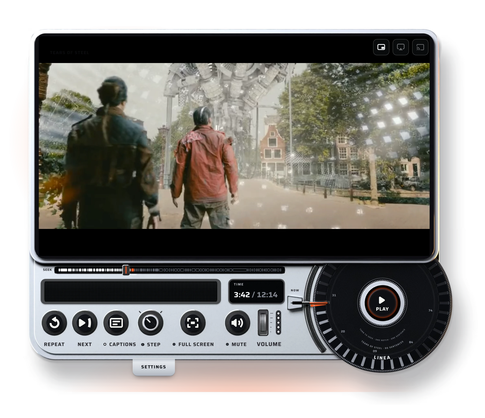
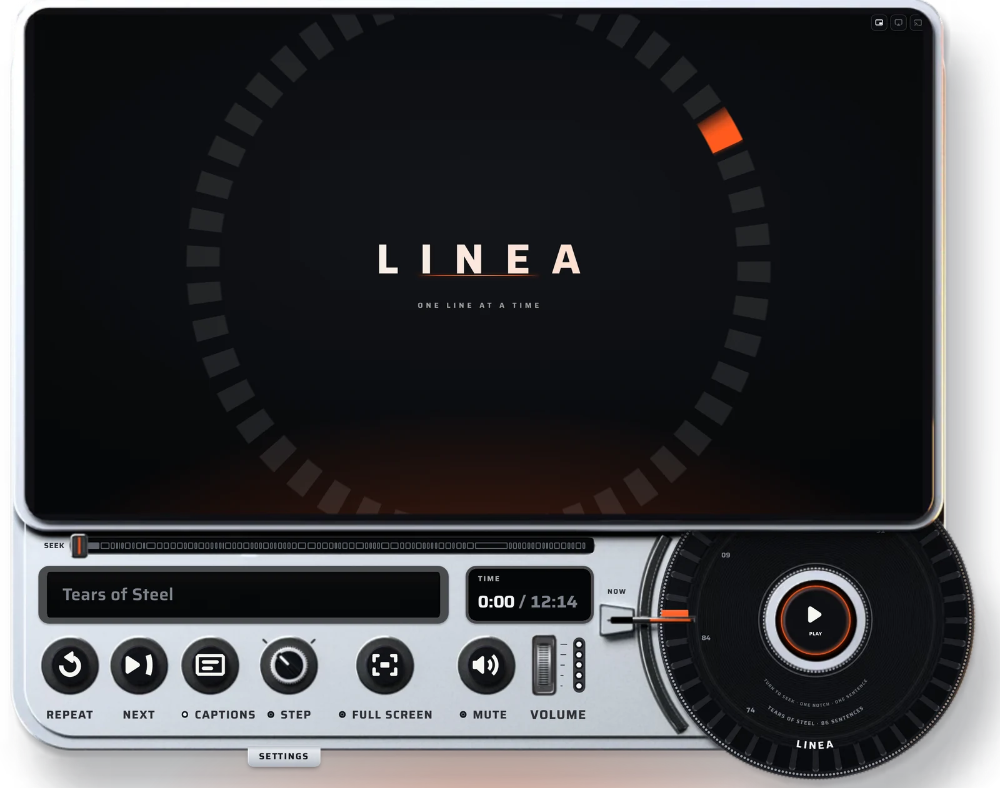

Linea, a Video.js 10 skin, playing Tears of Steel
A skin for Video.js 10
LINEA
A film player machined like an instrument, that moves through a film one spoken line at a time.
The wheel above is the player's own, drawn large: one notch for every spoken line, turning as the film speaks.
Tears of Steel and its subtitles (CC) Blender Foundation, mango.blender.org, CC BY 3.0. Streamed from this site.
Anatomy
Every control, where you expect it.
The five controls every player needs sit on the console, always in view. Linea's own keys sit beside them, named for what they do.
Required by the briefLinea's ownOn the picture
On the picture
On the console

The keys, left to right
Under the console
01
How to use it
What do you want to do?
Pick a question. The clip is the player itself, recorded doing exactly that; the white ring is where you press.
02
Fits any site
At home on any website, on any screen.
A live Linea inside a sample page. Change the site, the device and the accent; the player re-lays itself out for the space it is given, and every lit part takes the accent.
On a phone the desktop view is a preview. Switch to Phone to try it here, or use the player at the top.
03
Every state
Every moment of playback, shown.
From the first frame to the last, on a computer and on a phone. All 20 states, captured from the real player. Scroll the list, or pick one.

Start and end
Watching
Moving by line
Captions and language
Sound
Settings and keyboard
On a phone
04
Design thinking
A timeline guesses. Linea knows.
- 0notches on this film
- 0caption languages
- 0guessing
05
Specifications
Built on Video.js 10.
- Player
- Video.js 10.3, HTML:
<video-player>,<media-container>and any Video.js media element (<hls-video>,<mux-video>, a plain<video>). - Made of
- HTML, CSS and TypeScript; layered renders of the body at 1x and 2x, AVIF with WebP fallback; one font family (Saira) under the Open Font License.
- Captions
- Read from the video's own tracks or a complete WebVTT file; HLS subtitle renditions are read from the playlist. No captions: the film is cut into 28 equal steps and every control still works.
- Layouts
- The layout follows the player’s own width, not the window: wide from 760 px, upright below it.
- Outputs
- Picture in picture; AirPlay in Safari on a Mac and any browser on iPhone and iPad; Google Cast in Chrome and Edge on computers and Android, through Google’s Cast SDK.
- Site settings
--l-nowand--emberset the accent;--sr-font-namesand--sr-font-windowset the type.- Video
- HLS with Auto, 1080p, 720p and 480p, served with honest peak bitrates, so Auto picks a size the connection can hold.
- Weight
- Skin code 54 KB gzipped, inside a 60 KB budget; 279 unit tests.
06
Accessibility
Made for every viewer, and checked.
- Readable over any videoCaption words at 18.4:1 on display glass. Captions on the picture are white with a dark edge, readable on bright and dark frames alike.
- Focus you can seeA 3 px white ring with a dark halo on every control, never removed.
- Every control by keyboardTab order follows the eye, and focus returns to Settings when the tray closes.
- Big enough for a thumbEvery target at least 44 by 44 pixels, measured by hit tests at every width from 360 to 1920 px.
- Calm on requestWith reduced motion, the standby ring, the tray slide and the caption underline stand still.
- Named for screen readersEvery control has a spoken name; the wheel speaks the line it lands on.
- High contrastForced colours give a whole, plain layout in system colours, the spoken word marked with Highlight.
- Checked, not assumedaxe reports 0 violations on desktop and phone, on dark and light sites; tested in Chromium and WebKit, on an iPhone and in its simulator.
- Space K
- Play or pause
- ← →
- Previous or next line
- A
- Repeat the line
- N
- Next line
- W
- Step on or off
- C
- Captions on or off
- J L
- Back or forward 10 seconds
- Shift + ← →
- Back or forward 5 seconds
- ↑ ↓
- Volume
- M
- Mute
- F
- Full screen
- < >
- Speed
- Home End
- Start or end of the film
- 0 – 9
- Jump to 0 to 90 percent
- Esc
- Close Settings
07
Install
Add Linea to any page.
- Load Video.js and Linea
<script type="module" src="https://cdn.jsdelivr.net/npm/@videojs/cdn@10.3.0/video-player.js"></script> <script type="module" src="https://cdn.jsdelivr.net/npm/@videojs/cdn@10.3.0/ui/container.js"></script> <script type="module" src="https://cdn.jsdelivr.net/npm/@videojs/cdn@10.3.0/media/hls-video.js"></script> <link rel="stylesheet" href="https://akintadeaduralere-cmyk.github.io/linea/skin/linea.css"> - Wrap your video
<div id="player" reel-title="My film"> <video-player><media-container> <hls-video src="your-stream.m3u8" playsinline crossorigin> <track kind="captions" srclang="en" label="English" src="captions.vtt" default> </hls-video> </media-container></video-player> </div> - Mount it
<script type="module"> import { mountSentenceReel } from 'https://akintadeaduralere-cmyk.github.io/linea/skin/linea.js'; const host = document.getElementById('player'); mountSentenceReel(host, host.querySelector('hls-video')); </script>
Open source under Apache 2.0. The code on GitHub
Linea is a self-initiated concept made for the Video.js skins challenge.